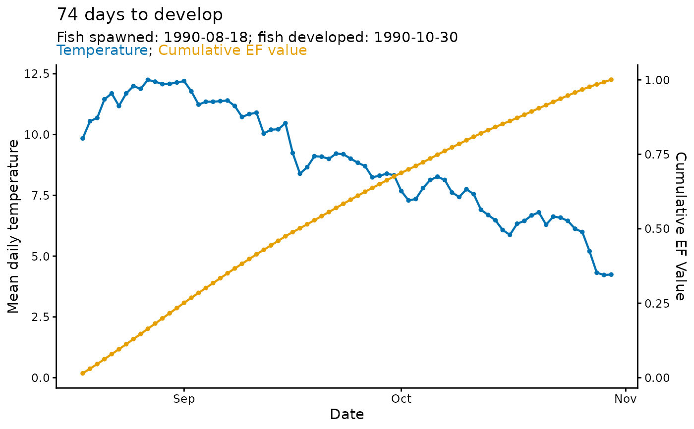
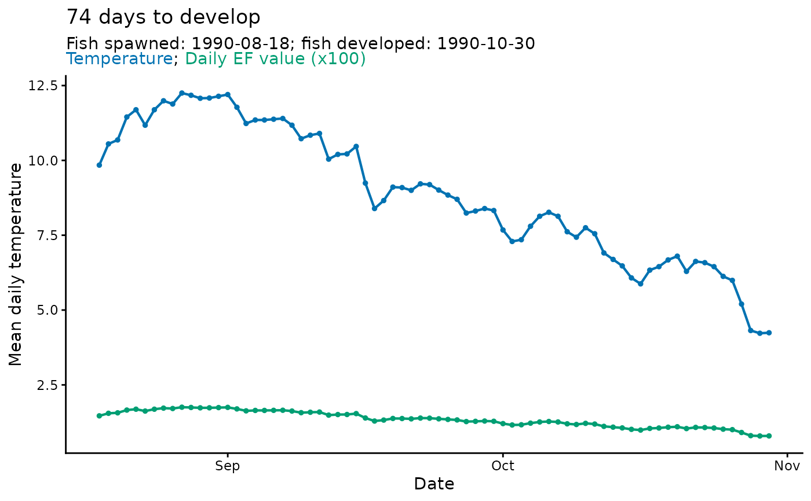

The function takes the output from predict_phenology() and creates a
basic ggplot2 plot object to visualize the predicted phenology.
Arguments
- plot
A list containing the output from
predict_phenology()- style
The style of the plot. A vector with possible values "all", "ef_cumsum", "ef_daily". The default is "all".
- labels
Logical. If TRUE (default), labels are added to the plot.
Details
When displayed, scaled daily effective temperature (EF) values plot to the primary y-axis. Cumulative EF values plot to the secondary y-axis.
Examples
library(hatchR)
# get model parameterization
sockeye_hatch_mod <- model_select(
author = "Beacham and Murray 1990",
species = "sockeye",
model = 2,
development_type = "hatch"
)
# predict phenology
sockeye_hatch <- predict_phenology(
data = woody_island,
dates = date,
temperature = temp_c,
spawn.date = "1990-08-18",
model = sockeye_hatch_mod
)
#> Warning: ! Fish developed, but negative temperature values resulted in NaNs after
#> development.
#> ℹ Check date(s): 1991-08-12
#> ℹ Fish spawn date was: 1990-08-18
plot_phenology(sockeye_hatch)
plot_phenology(sockeye_hatch, style = "ef_cumsum")

plot_phenology(sockeye_hatch, style = "ef_daily")

plot_phenology(sockeye_hatch, labels = FALSE)